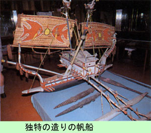

|
第３１ 捕虜の処刑
 何処までも続くヤシ林のなかに、ナガタの船着き場はあった。ヤシ林の中で、船着き場の近くに小屋があり、その側に大きなドリアンの 木が一本茂っていた。美味しいドリアンの実を沢山つけていたが、今はドリアンを取る余裕などない。私どもが今いる周辺は、人の姿など 全然なく、恐ろしいほど森閑としていた。敵戦闘機はマダンの上空ばかりでなく、いま、我々のいるナガタ桟橋付近にも飛来し、狂ったように獲物を探している。どうしたことか？ 敵の戦闘機が大木の下に隠れている我らを発見したらしく、我ら３人を銃撃してきた。幸いにこの大木は枝葉が凄く茂っていて、幹も大き い。我らは幹を盾に見立てて、敵機の銃撃してくる方向にグルグル回った。恐ろしさが身に染みた。 上空から見える筈はないのに我らを機銃掃射して来る。少し変だぞ？と思って辺りを目で探した。すると、５０メートルと離れていない クリークに外観が真っ白い２００トンぐらいの遊覧船が係留されていて、敵機はこの遊覧船を発見していたのである。この船には、誰も乗っ ていない。船主は本国に引上げ、放置された儘になっていたのである。船には燃料がなかったので、ついに炎上しなかった、また、沈没も しなかったので敵機は諦めて引き上げて行った。その時になって、やれやれ助かったとホッとした。 約１時間に亘る敵の空襲は一方的であった。友軍は為す術がなかったようだ。マダンに帰ってみると、町の建物は目茶目茶に破壊されて いた。赤い屋根、青い屋根が立ち並び、絵に書いたような美しい町並みは、跡形もなくふっとんでしまっていた。ところが、敵の全く一方 的な戦闘とばかり思っていたが、友軍の反撃で撃墜され飛行機からパラシユウトで脱出した敵空軍将校が多数捕虜になっていた。マダンを 強襲した爆撃編隊長は空軍少佐で、友軍の捕虜になっていた。この捕虜は直ちに日本本国に送還された。マダン軍通信所では深夜１２時頃、 同盟通信を傍受していたので数日後、日本に送還されたその捕虜が東京から米国国民に向けてラジオで反戦宣伝の放送をしていたのを知った。 他の３名の捕虜の空軍将校は憲兵隊がヤシの木の丸太で作った堅固な牢に閉じ込めた。捕虜は厳しい取り調べを数日間受けたらしい。 噂がどこからともなく、風のごとく伝わってきた。 『今日、午前１０時に捕虜の処刑がある』という。軍通信隊の我々は通信勤務者のみを残して、処刑を見にいった。 捕虜が牢からだされた。両手を後ろ手に縛られ、憲兵がその捕虜の手綱を持っている。一人づつ牢から出され、処刑場に連行されて行く。 捕虜の足取りは誠に重い。屠殺場に連れられていく羊の足取りを連想された。 墓穴は前日に掘られていて、その墓穴の前に捕虜は座らせられた。待ち構えていた従軍牧師が、その捕虜に英語で引導を渡した。辺りで は大勢の兵士が、どうなることかと、固唾を飲んで見守っていた。 軍司令部勤務で、剣道五段で達人だと自負していた某中尉が、日本刀で首をはねた。瞬間、ガツンという音がした。私は思わず首をちぢめ た。捕虜は前に倒れ墓穴にのめり込んだが、ピクピクして、まだ生きている。さすがに残酷だ！と思った。そのとき、すかさず介添え役の憲 兵が拳銃で楽にしてやった。見ていた兵士のなかに一様にホッとした感じが流れた。ところで、影で誰かが、『口ほどでない下手くそ』とつ ぶやいた。私は気持ちが悪くなり、次の処刑を見ないで通信所に戻った。西村伍長は最後まで刑執行を見てから戻ってきた。彼の話しによる と、次に刑を執行した准尉は上手だったと褒めていた。一度で首をはねたら、血がふき出し、頭も胴体も一緒に穴に入っていったという。 私は１ケ月位首筋が痛かった。こんな残酷なことは、もう二度と再び見ないことにした。この捕虜達は、敵ながら立派な態度だった。誠 にあっぱれだと思った。彼等は取調べ中に軍事については、一切喋らなかったと聞いている。 捕虜は処刑される寸前に、神様にお祈りを捧げた。祈りが終わってから処刑された。 最後に『お母さん』と呼んで死んでいった。『オオ マイ、ゴッド』と『マイ、マザー』と叫んだ声が、私の耳朶に暫く残った。国際法規は守られなかった。こんな戦場で国際法規を守れという 方が無理であると思う。敵も味方も神経がおかしくなっている。（１９４３年） 田中兼五郎少佐参謀は生還後、自衛隊の幕僚長に出世された。退官後は社団法人日本パプア ニユーギニア友好協会の会長を勤められた。 その御縁で私も協会に入会しています。が、平成四年に他界された。高橋主計大尉はカルカル島に行ったことまでは、知っているがその後の ことは分からない。 |